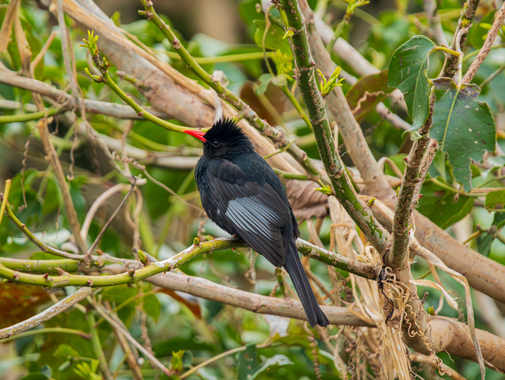

The Black Bulbul is a dark, medium-sized bulbul commonly associated with wooded hills and forests. Its plumage ranges from slate-grey to dark grey, and it has a prominent black crest and a red or orange bill and legs in many populations. It feeds on fruits and berries as well as insects and is often encountered in noisy groups moving through trees. It can be distinguished from other dark bulbuls by its prominent pointed crest, relatively large size, and bright reddish bill and legs. Compared with the similar Red-Whiskered Bulbul, it is distinguished by the combination of features described above. Its preference for hill forests, evergreen forests, forest edges, gardens, and plantations also helps separate it from species that use different habitats. Its characteristic behaviour, including social and vocal; often travels in pairs or small groups while searching through trees, provides another useful field clue. Taken together, these differences make it easier to distinguish from similar species when the bird is seen clearly.